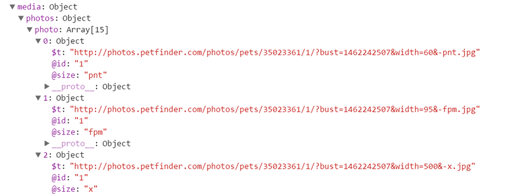

This is a simple hero unit, a simple jumbotron-style component for calling extra attention to featured content or information.
Next, let's get a photo of this cat. The photos are contained in an array within the media object. Upon closer inspection, it's apparent that the array contains several versions of the same image, in different sizes. The 300 pixel-wide version of the 1st image is appropriate for this table, so we'll use the 3rd image in the array.
After creating a new image object with the photo's URL as the source, we'll set the class to image-responsive, since we're using a Bootstrap layout, and we'll use response.name.$t to use the cat's name as the alt text.
Cat of the Day |
|
|---|---|
Name: |
|
Age: |
|
Sex: |
|
Breed: |
|
City: |
|
function getKitty(data) {
var response = data.petfinder.pet;
document.getElementById('name').textContent = response.name.$t;
document.getElementById('age').textContent = response.age.$t;
document.getElementById('sex').textContent = response.sex.$t;
document.getElementById('city').textContent = response.contact.city.$t;
for(var i = 0; i < response.breeds.breed.length; i++){
var newItem = document.createElement("li");
var textNode = document.createTextNode(response.breeds.breed[i].$t);
newItem.appendChild(textNode);
document.getElementById('breedlist').appendChild(newItem);
}
var image = new Image();
image.src = response.media.photos.photo[9].$t;
image.setAttribute('class', 'img-responsive');
image.setAttribute('alt', response.name.$t);
document.getElementById('image').appendChild(image);
}Copyright © Morgan Brenner · 2016